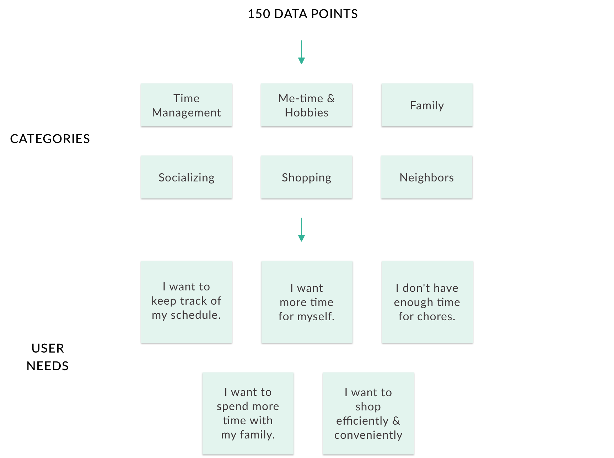
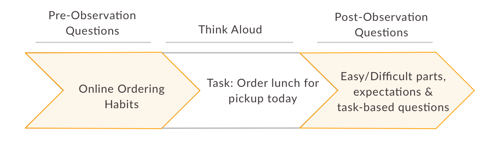
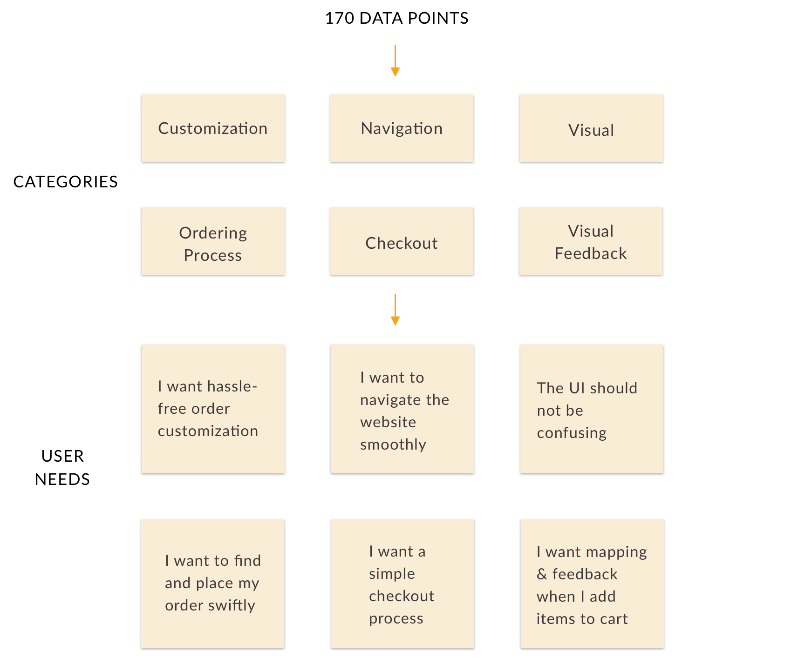
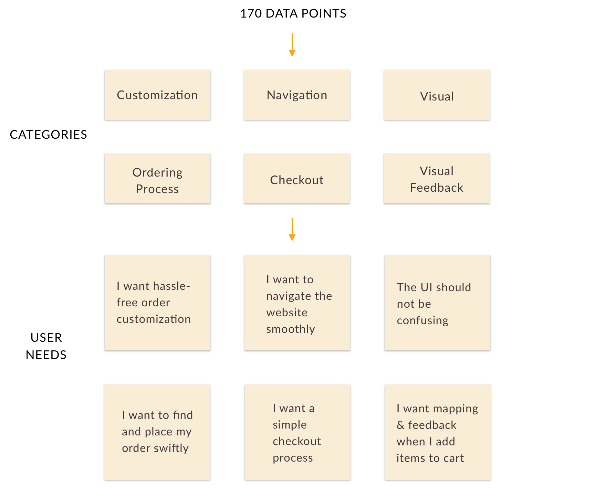
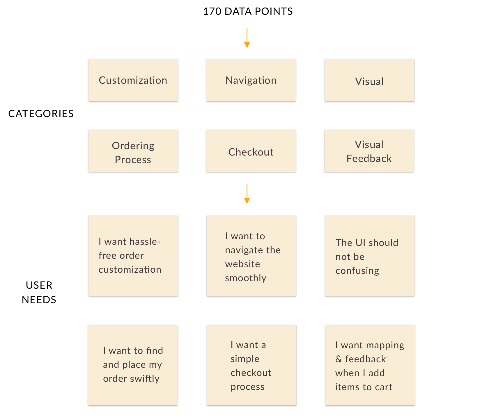

Hi, I am Tanuja. I am currently studying Human Computer Interaction at Georgia Tech.
I graduated with double majors in Computer Science and Physics from BITS Pilani, India.
Before joining Georgia Tech, I worked as a Design Intern for Microsoft Research and Telecom ParisTech.
I care about accessibility.
I like learning new skills and improving on previous ones. I love anything HCI and design. Scroll down to see my portfolio.
An AI driven planner that assists stay-at-home parents to find time for hobbies
Stay-at-home parents have little time for themselves as they juggle household chores and parenting.
After conducting user research, we identified time management
and task scheduling as major pain points in the routines of stay-at-home parents. The project outcome was
Smart Scheduler - an intelligent solution helping stay-at-home parents stay on top of their schedules and find time for their hobbies.
DESIGN OBJECTIVE
To enable stay-at-home parents engage in self-care and manage time effectively.
PROCESS
ROLE
UX Designer
UX Researcher
TEAM
Tanuja Sawant Rishma Mendhekar James McDowell Shubhangi Gupta
DURATION
4 Months
Aug 2018 - Dec 2018
TOOLS
Pen & Paper Sketch Adobe XD
RESEARCH
We performed Task Analysis, Literature Review, Competitive Analysis, and Interviews to learn more about our users.
Interviews and Affinity Mapping proved the most resourceful during our information gathering phase.
INTERVIEWS
We conducted semi-structured interviews
with 11 stay-at-home parents which helped us to identify patterns and trends among stay-at-home parents and the challenges that
they face.
AFFINITY ANALYSIS
In order to make sense of the significant amount of qualitative data that we rapidly collected through interviews, we choose to create an affinity map.
Through this, we identified 6 user needs for stay-at-home parents:

IDEATION
After analysing our data, we walked the wall and brainstormed 33 design ideas.
PERSONAS
From our interviews, we made two personas to keep us focused while creating our designs.
DESIGN ALTERNATIVES
Based on urgency of needs and feasibility of design ideas, we chose 3 ideas to explore in greater depth.
SMART SCHEDULER
Addressed Pain Point: Daily Scheduling
Wall mountable screen that enables stay at home parents to keep track of their schedule and
engage in self-care activities. Replaces calendars & schedulers.
KINDLY APP
Addressed Pain Point: Child Care
Mobile app that helps parents to find kid-friendly locations and activities based on user ratings.
HOME HELPER
Addressed Pain Point: Chore Delegation
A magnetic board game that can be hung on a wall. Family members advance in the game by doing chores,
thus helping the stay at home parent with household work.
USER FEEDBACK
Using the storyboards and wireframes we developed for each design alternative, we conducted a second round of semi-structured
interviews with 3 stay-at-home parents to determine which concept fulfilled the most urgent need in their lives and how they
would change each design. The results were unanimous — every stay-at-home parent preferred the Smart Scheduler.
STORYBOARDS
HI-FIDELITY PROTOTYPE
Clickable Prototype
Feel free to interact with the final prototype:
EVALUATION
We conducted moderated usability testing by giving 6 participants tasks that represented the core functionality of the system.
We asked the participants to think aloud as they went through the prototype.
RESULTS
Overall feedback was positive.
SYSTEM USABILITY SCALE Average score: 83.8%
DESIRABILITY TESTING
Top 3 words
Organized
Personal
Convenient
Learnings
It was interesting to learn that ease of use and scheduling drew participants
more to the design, rather than the self-care graphs, which were the primary functionality.
I learned to deal with circumstances in an effective manner without compromising the quality
of designs or evaluations. For example, we designed a prototype on a digital platform to share
it with our remote participants, and a paper prototype for our in-person study participants.
I learnt a lot from my team members - we had long and insightful conversations about UX,
Tech Industry, and other arbitrary topics.
RESAC: INTERACTION TOOLKIT FOR ACCESSIBLE GAMING
An interaction toolkit that enables all video games to be accessible by default.
For all video games to be accessible, the tools for game design and game play need to have built-in support for accessibility.
In this work, we designed, developed, and tested a novel accessibility framework for
Role-Playing Video Games using 3D Spatial Audio Technology. We built a Skyrim-like adventure game to demonstrate
ReSAC tools. See above video for the demo.
PROCESS
ROLE
Game Designer
Game Developer
UX Researcher
TEAM
Tanuja Sawant Dr. Manohar Swaminathan Sujeath Pareddy
DURATION
5 Months
Jan 2018 - Jun 2018
TOOLS
HoloLens Unity Pen & Paper Audacity
RESEARCH
LITERATURE REVIEW
I studied 30 research articles to understand and gain insights about the latest spatial audio interfaces developed.
I also read blogs, websites, and news articles throughout my internship period to stay upto date with latest trends.
DESIGN
RESAC
Spatial Audio can be defined as a 3D audio experience created using headphones. ReSAC,
Responsive Spatial Audio Cloud is a technology for intuitively describing the world in audio form to a person
with vision impairment.
RESAC INTERACTION TOOLS
VIEWDIO
Generalization of audio description for video games
ANCHOR
Selected object that serves as an anchor to help in orientation
NORTHHORN
Unique tone always played from the North direction
BODYSCAN
Spatialized audio description of objects in field of view
SELECT AND REACH
Spatialized audio beep that acts as a guide to reach objects
MISCELLANEOUS
Spatialized sonification of bumps, fluctuations in ambient sounds, player's footsteps, etc.
BODYSCAN
The player gets spatialized audio playout of objects in view.
The viewing angle and depth of the perceived field of view are adjustable.
SELECT AND REACH
A siren modulated in volume and pitch guides
the gamer to reach the objects.
VIEWDIO
Viewdios are zones that convey crisp summary of scenes.
A siren of varying pitch helps the player orient to face the scene.
USER FEEDBACK
I obtained quick feedback from office employees by conducting Think Alouds with the Skyrim-like adventure game.
Realising that the Skyrim-like adventure game is too complex for testing a subset of ReSAC tools, we decided to build simple video games for initial testing.
I learnt that too many tools with a lot of flexibility increase the cognitive load of the player. Hence we decided to incorporate constraints and test tools in chunks.
PROTOTYPING
I built a much simpler first-person 3D video
game for conducting preliminary user studies. The game environment is a room of size 84x36 sq. ft which has typical
workplace objects.
Top View of the Game Room
EVALUATION
I conducted usability testing with 6 people with vision impairments.
I received positive feedback - all participants were able to use the interaction tools successfully.
"I don’t play (PC/mobile) games because I have a
prejudice that games are largely inaccessible. But this game has changed my perception."
"I could feel myself inside the room. I heard the voice exactly from the
objects’ location, so it helped me to know where I should move and take turns. I am imagining, and I am playing."
LEARNINGS
I learnt a lot from my team during ideation and debugging phases. I developed an increased sense of passion for accessible design.
I was able to volunteer for two other projects while at Microsoft Research - which broadened my understanding of Emerging Markets.
I was guided by amazing mentors, who taught me a great deal about Assistive Technology, as well as debugging Unity applications.
I learnt to respect deadlines, even
if it means pulling all-nighters or staying at the office overnight.
TACTIBITS: SOCIAL TOUCH TECHNOLOGY
Modules that simulate social touch
for human-machine and human-human interactions via machines.
Touch can serve to not only facilitate interaction through tactile feedback
but can also convey emotions and strengthen emotional ties between individuals.
Tactibits (Tactile bits) are a step towards conveying emotions through touch during
interaction with gadgets such as mobile phones, laptops, tactile interfaces, etc.
RESEARCH QUESTION
How is emotional perception affected when vibrotactile touch patterns are combined with the thermal modality?
DESIGN OBJECTIVE
Design and develop a novel human-machine interaction technique and to
design a user experiment to test its effectiveness.
PROCESS
ROLE
Product Designer
Software Developer
MENTORS
Dr. Eric Lecolinet Marc Teyssier
DURATION
4 Months
Aug 2017 - Dec 2017
TOOLS
Pen & Paper Arduino & ATtiny Unity
LITERATURE REVIEW
The sense of touch has been shown to trigger emotional attachment and to communicate physical connection. Social touch
can be defined as touch occuring between individuals in a co-located space. Social Touch Technology is the use of haptic
technology for augmenting experiences of social touch. This is underexplored in interactive systems which mostly rely on
audio and visual modalities.
COMPETITIVE ANALYSIS
HARDWARE PROTOTYPING
Each Tactibit has a coin-shaped vibration motor to simulate vibration, a peltier to simulate the temperature of touch, an
h-bridge to drive direction of current, and an ATtiny84 microcontroller to control all these components. I2C communication
was setup between an Arduino as a master and ATtiny as slaves.
Tactibit's back view
Tactibit's front view
EXPERIMENT DESIGN
I developed a user interface to test Tactibits with 12 participants.
Tactibits can be arranged on the body to form any touch pattern. Three patterns- stroke, poke and hit
were simulated for the experiment. One can set the temperature and vibration values, and customize touch patterns.
Participants rate how pleasant and excited they feel after every trial of patterns is delivered to their forearms.
Because of the small duration of my internship (4 months), I could not conduct the user experiment. However, this project will be
continued further by my supervisors.
APPLICATIONS
Tactibits can serve to enhance user experience, convey affective information, strengthen sense of presence, etc.
They also offer a
promising way of providing empathetic interfaces to health assistive technologies.
On the back of mobile phones, Tactibits
would be a medium of emotion communication when people talk on the phone.
Tactibits could also be used to study
how different parts of the human body perceive simulated touch patterns.
LEARNINGS
I became acquainted with new research methodologies, learnt to work in diverse teams and
developed a habit of actively noting down project ideas and implementing them in my free time.
I was guided by amazing mentors, who taught me a great deal about the HCI community, as well as designing and building
great products. I was given a PhD opportunity at Telecom ParisTech towards the completion of my internship.
HOME AUTOMATION APP
This page is a work in progress. Please contact me if you'd like to know more about this project
DESIGN OBJECTIVE
PROCESS
ROLE
UX Designer
TEAM
Tanuja Sawant Amy Lambeth Hanyu Gong Himani Deshpande Xiaoshen Wang
DURATION
2 weeks
Nov 2018
TOOLS
Pen & Paper Sketch Axure VRED
LEARNINGS
VR INTERACTION WITH AI
Perform Improv theatre with an Artificially Intelligent partner in Virtual Reality
OVERVIEW
Improvisational theatre, often called Improv, is the form of theatre in which the performance is unplanned and unscripted.
Performers of the Improv Theatre often play the props game - where you use abstract objects to mime comedic actions with them
pretending them to be real-world objects. This project, titled 'The Robot Improv VR Circus', is a VR installation in which the VR user (who
wears the headset) plays the props game with an AI partner on stage. Both the VR user and the partner are impersonated
as robots in the experience. Each performer mimes actions on a turn-by turn basis. Every performer's actions are dependent on, and are a reaction to
what their partner just performed during their latest turn. The research intent is to observe how the AI agent’s actions affect the VR user’s experience and vice versa.
PROCESS
ROLE
UX Lead
Unity Developer
SUPERVISORS
Dr. Brian Magerko Mikhail Jacob
DURATION
4 Months
Aug 2018 - Dec 2018
TOOLS
Pen & Paper Unity
RESEARCH QUESTIONS
Diversity
Do the actions of the AI partner improve VR users actions?
Creativity Evaluation
Where do different actions fall within a creative space in regards to novelty, surprise, and value?
BELIEVABILITY
How believable are the actions generated by the agent?
Explainability & Usability
How can we aid the VR user's understanding of the AI partner's actions?
PROTOTYPING
I explored various ways - text, audio, video, pictures, and their combinations to convey
the action that the agent is miming with the prop. After brainstorming, I narrowed down to 3 design ideas. I conducted usability tests with 6
participants to find which design alternative the users prefer.
To engage participants during the VR experience, I decided to gamify the interaction. I conducted expert reviews with
4 experts to identify an apt gamification strategy that would indulge the users. We finalized on the idea of the VR user hitting
a VR buzzer after miming each action to maximize the number of mimed actions. Additionally, I improved the Audience user interface
to make the UI understandable from the audience perspective.
EVALUATION
I started to plan for the usability studies as I was developing the software in Unity.
I made survey questionnaires, created interview and data collection scripts, and conducted pilot studies to prepare for
the usability tests. My team and I also planned to conduct MTurk studies for massive data collection.
WHAT I LEARNED
I learned the User Centered Design methodology followed in Georgia Tech's HCI labs. Apart from UX Research and Design,
I am also a software developer for this project. I wear multiple hats and have learned to think from each hat wearer's perspective.
I was guided by an amazing mentor, who taught me a great deal about computational creativity.
More importantly, his humility, patience and kindness has inspired me to lead projects like he does.
Accessible Online Ordering
About Schlotzsky's
Schlotzsky’s is a sandwich franchise founded in Austin, Texas. Schlotzsky’s is taking a proactive approach to implement
accessible design throughout the company’s websites to grow their user base and comply with the Americans with Disabilities Act Title III.
Our target users are people interested in ordering food for pickup from Schlotzsky's online website
PROCESS
ROLE
UX Researcher
UX Designer
TEAM
Tanuja Sawant Rishma Mendhekar James McDowell Shubhangi Gupta
DURATION
4 Months
Aug 2018 - Dec 2018
TOOLS
Pen & Paper Sketch React.js
RESEARCH
In order to identify pain points that the website’s users face, we conducted 4 research methods - Task Analysis,
Cognitive Walkthrough, Interviews and Think Alouds, and Tree Testing.
TASK ANALYSIS
We conducted task analysis to understand users’ goals and possible task flows while ordering on the
Schlotzsky’s website. This allowed us to spot navigational issues and understand the process at a granular level.
COGNITIVE WALKTHROUGH
We conducted cognitive walkthrough to understand the customer’s expectations and information needs on the website.
We formulated online ordering tasks and answered the following questions for each step in the process:
THINK ALOUDS
We conducted think aloud sessions with 13 participants representative of our target user group.
These sessions helped us to understand the website’s strengths
and weaknesses from the perspective of a consumer.

AFFINITY MAPPING
After conducting think aloud sessions, we performed affinity mapping
to obtain a set of broad problems we should cater to.

TREE TESTING
To collect quantitative data about the website’s information architecture,
we conducted Tree Testing with 68 participants. Tree Testing helped us to understand
what portion of users could find what they were looking for, and if the navigation labelling
was appropriate.
Task: You live in the city of Atlanta, Georgia.
You have to order a Fresh Veggie Sandwich from a restaurant called Schlotzsky's.
RESEARCH FINDINGS
After synthesizing our data from all the conducted research methods, we identified the following common pain points.
PERSONA
EMPATHY MAP
CUSTOMER USER JOURNEY
BRAINSTORMING
We brainstormed possible design solutions to the online ordering platform, making sure that we didn’t restrict ourselves to just a website.
DESIGN
We narrowed down to 3 design alternatives based on their feasibility and usability.
DESIGN ALTERNATIVES
VOICE ASSISTANT
Converse with a smart voice interface to order food online.
We shortlisted this idea as it allows natural interactions and aids accessibility.
CHATBOT
Chatbot that uses text as a medium of communication.
Chatbots have great potential of being accessible interfaces with screenreaders.
WEBSITE
We designed and developed a website according to the
web accessibility standards. A streamlined website is a familiar and usable alternative.
USER FEEDBACK
We conducted 2 rounds of feedback with 6 participants to evaluate our design alternatives.
We used the Wizard of Oz method to simulate the chatbot and voice interface.
We simulated the chatbot on Facebook messenger. The website's low fidelity prototype was developed in React.js using accessibility guidelines.
All users preferred, from most to least:
Website
Chatbot
Voice interface
FIRST ROUND OF FEEDBACK
We found that users generally underestimate the capabilities of chatbots and voice interfaces
because of their previous experiences and are therefore hesitant to engage with them.
Participants felt that hearing the entire menu or placing a large order was too much cognitive load while
using the voice interface.
Participants also stated that they would prefer a blend between the chatbot and website.
SECOND ROUND OF FEEDBACK
For this round,we made improvements to our design alternatives and
combined the website and chatbot.
Participants felt that the chatbot and the website together were redundant;
they would rather interact only with the website.
We decided to go forward with the website and added the following design improvements
based on the data gathered.
WEBSITE WIREFRAMES
Home page
Customization
Category lists
WEBSITE PROTOTYPE
We designed a medium fidelity prototype in Sketch. Snapshots of main screens are shown below.
The implemented website URL can be found here.
EVALUATION
We tested our prototype with 9 people - 3 experts and 6 participants.
We conducted Affinity Analysis on the data obtained during Think Aloud tests.
We gathered Design Recommendations after analysing our data from all evaluation sessions.


 
